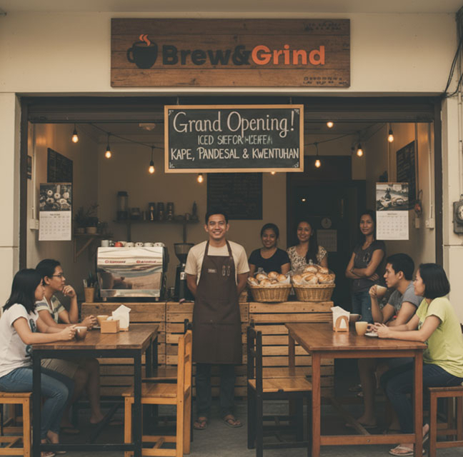
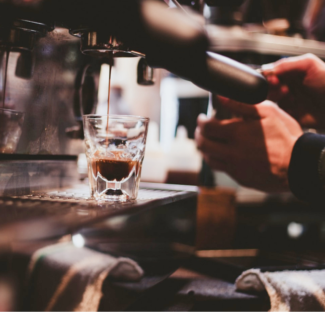
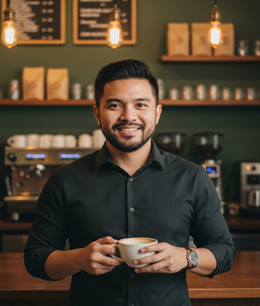

Our Story
Brew & Grind first opened its doors in 2014 at the lively corner of P. Noval and Dapitan St. in Sampaloc, Manila. What started as a humble dream to share the love of high quality coffee in a cozy, welcoming space quickly became a neighborhood favorite.
From early mornings filled with the aroma of freshly ground beans to late afternoons shared over warm conversations, Brew & Grind has always been more than just a coffee shop. It's a gathering place for students, professionals, and friends, a spot where every cup tells a story and every visit feels like home.
Over the years, our passion for great coffee and genuine connection has only grown stronger. At Brew & Grind, we don't just brew coffee, we brew community.

Our Mission - Vision
At Brew&Grind, our mission is to serve exceptional coffee thoughtfully brewed from the finest, ethically sourced beans. We aim to create more than just a beverage—we offer an immersive and heartwarming experience that celebrates craftsmanship, care, and the richness of every cup shared.
Our vision is to nurture a growing love for coffee by creating meaningful, high-quality experiences that bring people together. Whether it's a quiet moment alone or a conversation shared, Brew&Grind strives to be the cozy backdrop to life's little connections and everyday rituals.

Words from Our Founder
When I opened Brew & Grind in 2014, my dream was simple: to create a place where good coffee and good company come together. Coffee, to me, has always been about moments—the quiet mornings, the laughter, and the connections it brings.
From our first espresso on the corner of P. Noval and Dapitan, Brew & Grind has grown into more than just a café. It has become a community built on passion and warmth.
Every cup we serve is a reminder of that dream. I hope you always find comfort and belonging here at Brew & Grind.
When I opened Brew & Grind in 2014, my dream was simple: to create a place where good coffee and good company come together. Coffee, to me, has always been about moments—the quiet mornings, the laughter, and the connections it brings.
Miguel "Migs" Santos
Founder
